Navrhnout správné a funkční osvětlení interiéru je celkem věda. Nyní máme v našem bytě v obýváku 17 bodovek, které vrhají ostré světlo jedním směrem. Dělá to nepříjemné stíny ze všech stran a celý strop je tmavý, jako by na nás padal. Když jsme si pořídili pokojovou lampu, utvořilo to mnohem příjemnější atmosféru, ale pořád to není ono. V domě nechceme osvětlení podcenit, a proto jsme oslovili největšího českého guru na světlo Hynka Medřického a nechali si zpracovat světelný plán domu.
Studie osvětlení
O Hynkovi jsem se poprvé dozvěděl z blogu Martina Jaroše. O něco později jsem s ním viděl rozhovor v DVTV, který mě zaujal. Už tenkrát mě napadlo, že by stálo za to Hynka oslovit a nechat si s osvětlením poradit. Během příprav projektové dokumentace domu jsem si na Hynka vzpomněl a narazil na Cukrfree Podcast, kde hovoří o cirkadiánním rytmu, o modrém světle, o tom jak správně svítit a také o svém vynálezu - Vitae žárovce. Tenhle podcast mě nadchnul a přesvědčil o tom, že v našem domě chceme mít svítidla právě od Hynka. Na jaře 2020 jsme začali domlouvat návštěvu jeho showroomu Artemide v Praze, která se nakonec kvůli Covid-19 konala až v květnu.
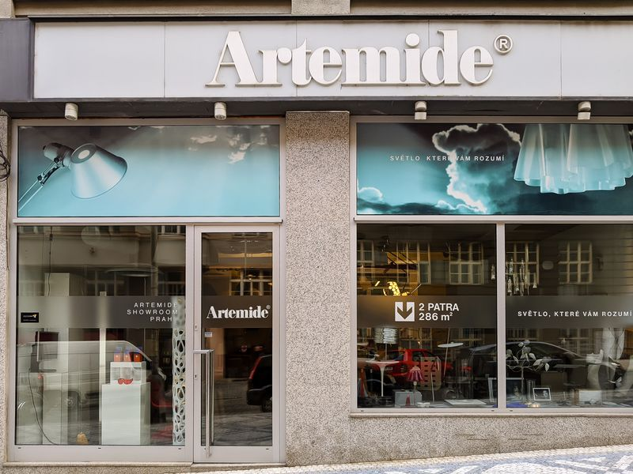
V showroomu jsme se bohužel s Hynkem nepotkali, ale ujal se nás Václav. Pověděl nám, jak by se mělo v domě správně svítit, ukázal nám jak svítí různé druhy svítidel, společně jsme si prošli půdorysy místnost po místnosti a vymysleli návrh osvětlení. Schůzka byla dost intenzivní, trvala asi 4 hodiny. Dozvěděli jsme se spoustu nových věcí a vyzkoušeli si na vlastní oči různé způsoby svícení. Osvětlení interiéru je fakt magie. Ze schůzky jsme odcházeli nadšení. Hynek a jeho tým jsou profíci, kteří své práci rozumí a dělají to dobře.
Po návštěvě showroomu jsme zaslali Václavovi půdorysy domu v DWG formátu. Zhruba po 2 týdnech jsme obdrželi podrobný světelný plán v PDF i s cenovou nabídkou. Plán měl celkem 55 stran a obsahoval výpis všech svítidel v jednotlivých místnostech. Většinu z nich jsme měli možnost vidět v showroomu. Ke každému svítidlu byl popis, umístění, technické parametry zdroje a fotka. V některých místnostech bylo navrženo několik možných variant osvětlení, ze kterých jsme si potom vybrali tu, která se nám nejvíc líbila. Následně jsme obdrželi půdorysy se zakreslenými svítidly, vypínači, výškovým umístěním a výpisem všech světel. Plán mimo jiné obsahoval info o stmívání světel, typu zdroje, příkonu, typu kabelu atd. Zpracování světelného plánu zabralo celkem 3 měsíce (včetně zapracování našich připomínek) a stálo 25k Kč. Za zpracování plánu jsme získali slevu 15% na všechna svítidla z Hynkova obchodu. Výsledná cena za osvětlení celého domu vychází celkem příznivě a to díky tomu, že svítidel bude méně než je v dnešních moderních interiérech obvyklé, zato budou kvalitní a dostatečně výkonné.
Nejvíc mě překvapil moment, kdy jsme řešili návrh osvětlení exteriéru. Když jsem se zeptal, jak budeme svítit venku, dostal jsem odpověď, že venku svítit nebudeme - kvůli ochraně přírody a redukci světelného znečištění. Dovedu si představit, že jiné světelné studio by nám navrhlo osvětlení zahrady, lodžie, LED podsvícení parkovacího přístřešku, světýlka u příjezdové cesty, podsvícení čísla popisného atd., jen aby nám prodalo co nejvíce svítidel a mělo kšeft. Tehdy jsem si uvědomil, že Hynkovi skutečně záleží na tom, aby se svítilo správně. Hynek vždy hovoří o světle s nadšením a ze všech podcastů a videí z Instagramu je poznat, jak má svou práci rád. S takovými lidmi je radost spolupracovat.
Hynek má celkem originální přístup k návrhu osvětlení, který jsem v žádném jiném světelném studiu neviděl. Někomu by se mohlo zdát zvláštní, že v ani jednom z pokojů nebudeme mít žádné svítidlo umístěné na stropě, nad kuchyňskou linkou budou dva LED pásky místo jednoho a na jižní terase nebude světlo žádné. Na konci článku blíže popíšu náš světelný plán, ale prvně si povíme něco o vlivu světla na lidský organismus, abych mohl lépe vysvětlit, proč je osvětlení v našem domě takto navrženo.
Cirkadiánní rytmus
Dalo by se říci, že světlo má pro člověka dvojí funkci. Svítíme, abychom viděli ve tmě, to je jasné. Tou druhou úlohou je synchronizace biologických hodin. Světlo totiž přímo ovlivňuje cirkadiánní rytmus člověka, živočichů i rostlin. Lidské oko se vyvíjelo milióny let a jeho funkce se přizpůsobovala přirozeným podmínkám na Zemi - slunečnímu záření a ohni. Mimo tyčinek a čípků se na sítnici oka nachází také vnitřně fotosenzitivní melanopsinové gangliové buňky. V roce 2007 bylo objeveno, že tyto fotoreceptory, citlivé na modrou složku světla, se podílí na řízení cirkadiánního rytmu a mají vliv na produkci hormonu melatonin. Receptory jsou nejvíce citlivé na část spektra s vlnovou délkou kolem 464 nm (modrá). Modrou složku obsahuje každé bílé světlo, jelikož mozek si bílé světlo vytvoří složením barevných složek světelného spektra. Modré světlo funguje jako signál pro synchronizaci centrálních biologických hodin. Spousta lidí o tom bohužel vůbec neví nebo to neřeší. Důsledkem toho je, že nevhodně svítí ve svých domácnostech. Mezi tyto lidi bohužel patří i někteří úředníci, kteří rozhodují o tom, jaké zdroje světla se použijí u pouličních lamp. Stále častěji dochází k výměně sodíkových výbojek za studené bílé LED zdroje, které jsou však pro pouliční osvětlení absolutně nevhodné.
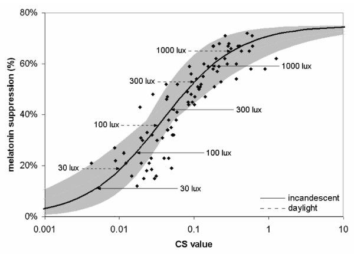
Cirkadiánní rytmus je biorytmus s periodou 20 - 28 hodin (skřivani mají kratší rytmus, sovy zase delší), který má vliv na činnost orgánů a produkci hormonů. Mimo jiné ovlivňuje krevní tlak, funkci kardiovaskulárního systému, činnost střev, ale i kvalitu spánku. Tyto biologické hodiny, které se starají o správné načasování biologických procesů v těle, jsou řízeny párem suprachiasmatických jader, které se nachází v hypotalamu mozku. Tato jádra jsou propojena se sítnicí oka, aby bylo možné vnitřní hodiny synchronizovat pomocí světla a tmy. Proto je důležité, aby byl cirkadiánní rytmus organismů v souladu se střídáním dne a noci.
Při poklesu denního světla začne tělo produkovat hormon melatonin (hormon tmy), který navozuje spánek a startuje regeneraci těla. Proto se lidem snadněji usíná ve tmě. Neznamená to ale, že člověk nedokáže usnout při světle u televize. Od ranního probuzení postupně narůstá homeostatický tlak na spánek a pokud je člověk unaven, tak zkrátka usne. Naopak na denním světle tělo produkuje hormon serotonin (hormon dobré nálady), který má vliv na pozitivní náladu člověka. Nedostatek serotoninu nastává nejčastěji v zimním období kvůli úbytku slunečního světla. V ranních hodinách pak tělo produkuje hormon kortizol (stresový hormon), který udržuje stabilní vnitřní prostředí.
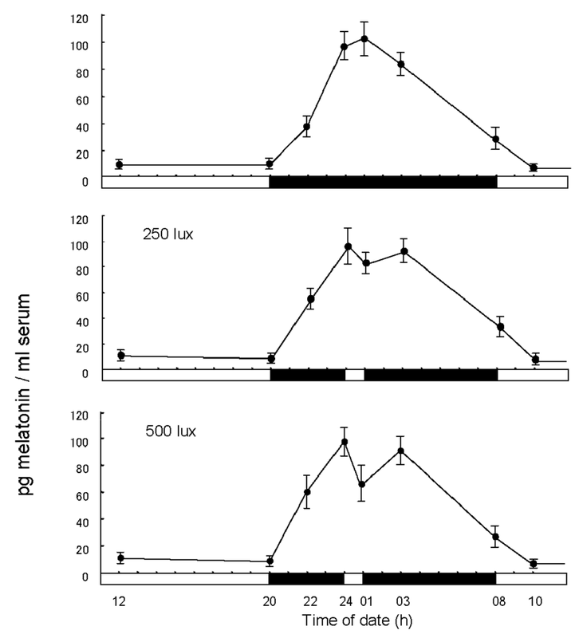
Zdroj: Hladina melatoninu během noci při expozici bílého světla o různých intenzitách (expozice po dobu 1h)
Melatonin má silné antioxidační účinky, posiluje imunitu, zabraňuje vzniku nádorových onemocnění a celkově podporuje regenerační procesy v těle. Vyrovnaná hladina melatoninu je tedy pro tělo velmi důležitá. Sekrece melatoninu není závislá pouze na intenzitě světla, ale zejména na spektrálním složení světla. Je-li člověk vystaven světlu s podílem modré spektrální složky během noci, tělo tím dostává signál, že je den a resetuje své biologické hodiny. Zastaví produkci melatoninu a začne produkovat hormon kortizol. K narušení údajně stačí i velmi krátké ozáření v řádu vteřin. V případě nedostatku melatoninu dochází k rozladění cirkadiánního rytmu. Proto je modrá (400 - 550 nm) v noci zdraví neprospěšná. Schopnost tvorby melatoninu se s rostoucím věkem snižuje. Tvorbu melatoninu narušuje například i konzumace kofeinu v pozdních hodinách.
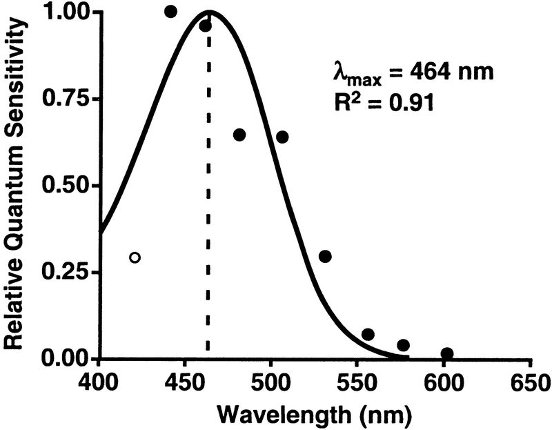
Zdroj: Potlačení produkce melatoninu v závislosti na spektrálním složení světla
Modré světlo nás obklopuje ze všech stran. Vyzařují ho žárovky, zářivky, LEDky, displeje atd. Lidské oko je na světlo extrémně citlivé. Střídání dne a noci znamená pro oko rozdíl v intenzitě světla milion ku jedné. Produkci melatoninu v noci dokáže narušit i malá LED kontrolka nějakého zařízení. Stejně tak produkci melatoninu naruší klasická žárovka - ač je modrá složka světla minimální, žárovka svítí s vysokou intenzitou. Po celou historii lidstva člověk využíval ke svícení pouze oheň, který modrou spektrální složku neobsahuje. Až relativně nedávno, v roce 1879, byla vynalezena žárovka. Její spektrální složení je však velmi podobné ohni a obsahuje minimální množství modrého světla. Větší hrozbou pro správnou sekreci melatoninu jsou LED svítidla, jejiž světelné spektrum obsahuje mnohem větší podíl modré složky. Proč? Bílé LED světlo lze vytvořit dvěma způsoby. Prvním je aditivní mísení barev (RGB), které se využívá např. u LED televizí. Druhým způsobem je fotoluminiscence, kdy z monochromatického modrého světla s vysokou energií a vrstvy fosforu (luminofor) vzniká nízkoenergetické žluté světlo. Spektrum LEDky tedy obsahuje modrý peak, z něhož se budí bílé světlo. Lidské oko není evolučně uzpůsobeno k používání umělých zdrojů světla. Je potřeba na to při návrhu osvětlení myslet a speciálně brát ohled na vliv světla na cirkadiánní rytmus. Zdravé osvětlení by mělo simulovat přirozené přírodní zdroje světla - slunce a oheň, kterým se Homo sapiens přizpůsoboval miliony let.
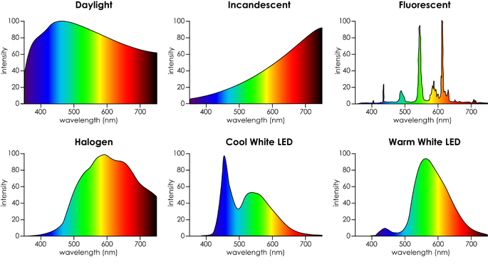
Zdroj: Spektrální složení různých zdrojů světla
Světelná hygiena
Světlo má velký dopad na naši psychiku, zdraví a kvalitu spánku. Umělé osvětlení primárně slouží k tomu, abychom si “prodloužili den”. V prosinci chceme mít stejně intenzivní světlo jako v červnu, aby se nám dobře pracovalo. Hynek Medřický na svém webu Světelná hygiena popisuje, jak bychom měli optimalizovat svoji světelnou hygienu při používání umělých zdrojů osvětlení. Základní myšlenkou je napodobovat slunce, na které je lidské oko uzpůsobeno. Měli bychom se zaměřit na 3 parametry: intenzitu světla, spektrální složení a polohu zdroje světla.
Ráno a přes den by měla být intenzita světla co největší. Ideální je přirozené světlo ze slunce, které nás nabíjí energií a podporuje soustředění. Večer po práci při relaxaci bychom měli intenzitu osvětlení snížit, jako při západu slunce. V noci bychom měli intenzitu minimalizovat, imitovat oheň. Na spaní je pak ideální absolutní tma. Vhodné je používat zatemňovací blackout závěsy.
Světlo ze slunce přes den obsahuje plné spektrum. K večeru postupně ubývá modré a zelené složky. Při západu se průchod paprsků atmosférou prodlužuje, čímž se eliminují krátké vlnové délky slunečního záření. Proto je západ slunce červený. Touto změnou barevného spektra dostává tělo signál, že přichází noc a začne se připravovat na spánek. Během dne bychom tedy měli používat vyvážené plnospektrální bílé světlo, které je podobné slunci. Večer bychom měli svítit teplým bílým světlem s nízkým obsahem modré složky a 90 minut před spánkem už jen oranžovým světlem bez modré a zelené složky. Zcela se vyvarovat modrému světlu je poměrně obtížné. Nejjednodušší a nejúčinnější je použít červené brýle. Na různé kontrolky a displeje lze použít červenou nalepovací fólii. Na displeje počítačů a telefonů lze využít softwarové filtry (Iris, F.lux, Twilight).
Co se týče polohy světla, přes den se slunce nachází nad námi, při západu je v úrovni očí a v noci naši předci svítili jen ohněm na zemi, pod úrovní očí. Stejným způsobem bychom měli svítit i my.
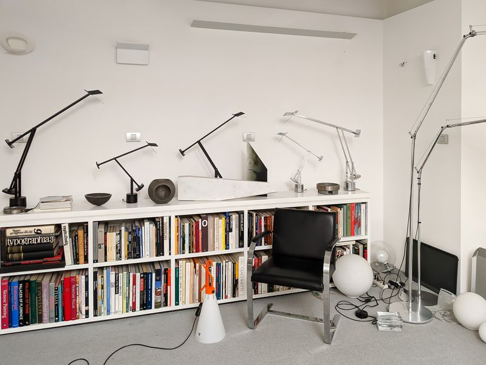
Technické parametry zdrojů osvětlení
Při výběru vhodného svítidla je potřeba brát ohled na několik různých parametrů.
Teplota chromatičnosti udává barevnou teplotu světla a měří se v Kelvinech. Teplá bílá má hodnoty nižší než 3300 K. Studená bílá má více jak 5000 K. Svíčka má 1900 K, klasická žárovka 2700 K, halogenová žárovka 3000 K, zářivka 4000 K, denní světlo 6000 K, zamračená obloha 8000 K. Na práci a studium (pracovna, kuchyně) je vhodná studená bílá, na relaxaci (ložnice, dětský pokoj) potom teplá bílá.
CRI je index věrnosti podání barev a je ukazatelem kvality reprodukce barev pod daným světlem v porovnání se sluncem. Měří se na stupnici 0 - 100, přičemž přirozené denní světlo má CRI 100. Světla určená pro denní svícení by měla mít CRI co nejvyšší, ideálně 90 a více. V kuchyni a u zrcadel by měla mít světla hodnotu CRI blížící se 100. V showroomu jsme měli možnost porovnat kvalitní LED pásek s vysokým CRI oproti levnému nekvalitnímu pásku. Václav nám dal do ruky pomeranč a citrón. Rozdíl v podání barev byl obrovský! Pod tím levným páskem nešel dle barvy rozeznat pomeranč od citrónu. Barva byla téměř stejná.
Světelný tok vyjadřuje světelný výkon záření a měří se v lumenech. Je to množství světelné energie, která je zdrojem vyzářena za 1 sekundu. Tato veličina je u LED zdrojů více vypovídající, než příkon LED zdroje ve wattech.
Intenzita osvětlení vyjadřuje světelný tok dopadající na jednotku plochy a měří se v luxech. Vhodnou intenzitu osvětlení určují hygienické normy. Kuchyňská linka by měla mít 500 lx, pracovna nebo dětský pokoj 300 lx, koupelna nebo šatna 200 px, chodba nebo sklad 100 lx. Podle Hynka Medřického jsou však tyto hodnoty z hlediska kvality spánku nedostatečné a místo stávajících doporučení 300 - 500 lx by měla být intenzita pro denní svícení aspoň 800 lx.
Stupěň krytí (IP) udává odolnost elektrických zařízení proti vniknutí prachu (první číslice) a kapalin (druhá číslice). Svítidla v koupelnách by měla mít krytí aspoň IPX4. Venkovní svítidla by měla mít také aspoň IPX4 a svítidla instalovaná v zemi IPX5.
Patice světelných zdrojů jsou různého typu. Nejběžnější jsou šroubovací závity E27 (Edisonův závit) a E14 (miňonka). Bajonetová patice GU10 se často využívá u bodových svítidel. Zásuvná patice G9 se obvykle využívá v bodovkách a stolních lampách.
Flicker je jev, který se vyskytuje u LED zdrojů a projevuje se rychlým blikáním světla. Toto blikání lidské oko sice nezaznamená, ale může způsobit únavu očí, bolest hlavy, migrénu a další potíže. LEDkám s flickerem je tedy lepší se vyhnout. Bohužel i některé zdánlivě kvalitní zdroje mají flicker (např. Philips Hue). Blikání způsobuje střídavý proud, který má frekvenci 50 Hz, takže světlo ve výsledku blikne 100x za vteřinu. Tento problém se u žárovek a halogenek nevyskytoval, protože rozžhavené vlákno mělo určitou setrvačnost. LEDky by proto neměly být napájeny střídavým proudem. V moderních instalacích lze problému předejít využitím LED předřadníku, který zajistí konstantní stabilizované stejnosměrné napětí/proud. Blikání může způsobovat i nesprávně nakonfigurovaný stmívač. Flicker se dá snadno otestovat pomocí kamery mobilního telefonu - ideálně v režimu slow motion.
Dalšími důležitými parametry svítidel jsou příkon, vstupní napětí (obvykle 230 V nebo 12 V) a stmívání zdroje. Podstatné je i dobré chlazení LED čipů, které pak ovlivňuje jejich životnost.
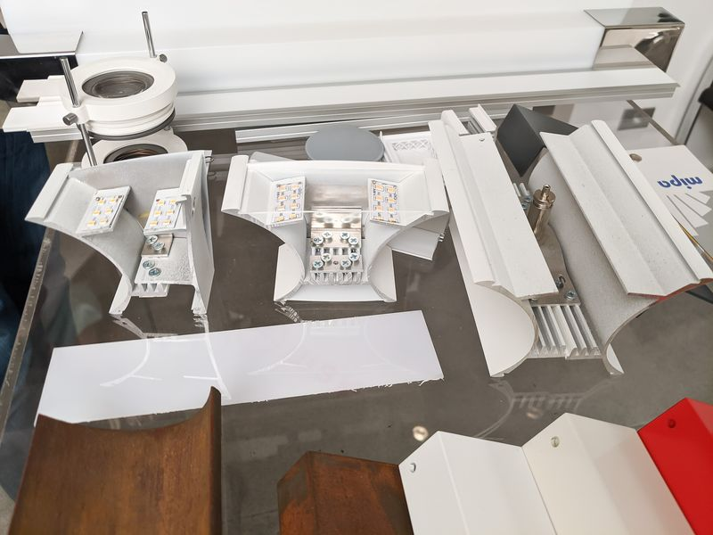
Jak správně svítit
V dnešní době lze vybírat z nepřeberného množství různých druhů svítidel. Doby, kdy vprostřed obýváku visel na stropě jeden lustr, jsou dávno pryč. Mnoho moderních interiérů dnes využívá sadu různých světel s nižším výkonem, než-li jeden silný zdroj světla. Často to jsou i desítky samostatných zdrojů světla na jednu místnost. Velmi oblíbené jsou bodovky, což je paradoxní, protože vytváří celkem nepříjemné světlo. Bodová svítidla nejsou do domácností vůbec vhodná, protože osvětlují malou plochu intenzivním světlem, oslňují, vytváří tmavý strop (tzv. jeskyňový efekt) a vrhají nepříjemně ostré multi-stíny. Vícenásobný stín vytváří optický klam, což může vést i k poranění např. při krájení v kuchyni. Bodové světlo se hodí ke zvýraznění nějakého předmětu (exponát v galerii, baletka na pódiu), ale nikoliv na svícení v interiéru.
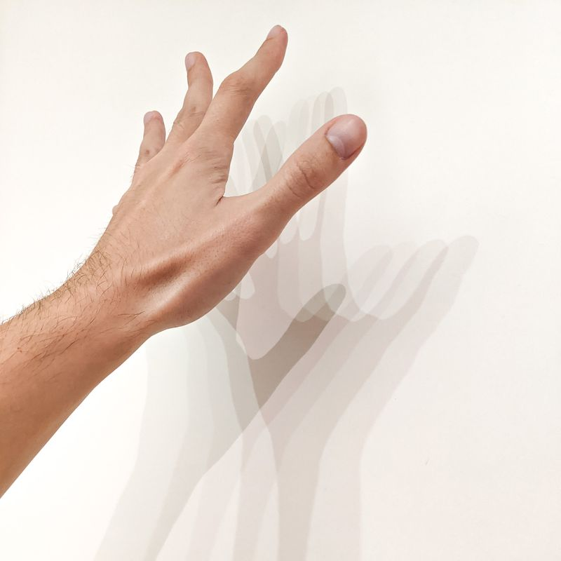
Pro správné dodržování světelné hygieny je potřeba mít v interiéru svítidla pro denní svícení, večerní relax a noční osvětlení. Co tedy použít místo populárních bodovek? Na denní svícení je mnohem příjemnější a lepší použít měkké rozptýlené světlo, které nesvítí přímo, nevrhá žádné ostré stíny a svítí z velké plochy. Toho lze docílit odrazem světla o strop nebo stěnu. Zdroj však musí být dostatečně výkonný. Krásně se takto osvítí celá místnost a nevzniká jeskyňový efekt. Tento způsob osvětlení ovšem vyžaduje bílý strop, aby se světlo dobře odráželo. Je tedy lepší použít jeden silný zdroj, než-li více slabších. Stále se držíme myšlenky napodobovat slunce - a to je na obloze jen jedno. V moderních interiérech jsou velmi populární závěsná svítidla nad kuchyňským ostrůvkem. Ta obvykle osvětlují pracovní plochu přímým světlem. Pokud jich je víc, vytváří nepříjemné ostré stíny. Taková svítidla vypadají v interiéru hezky, ale nejsou bohužel příliš funkční, takže by se měla používat pouze jako doplněk. Večer a v noci, kdy slunce zapadne, je nejlepší svítit lokálně a pod úrovní očí.
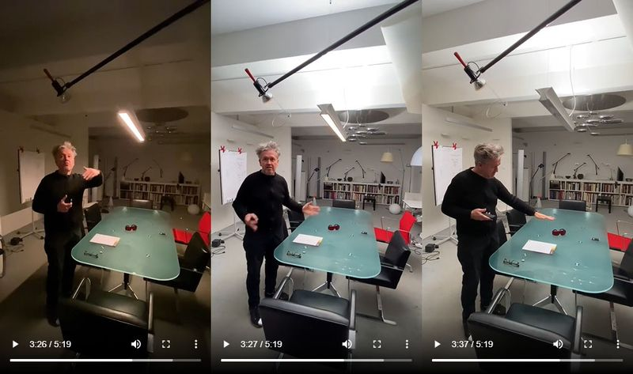
Světlo by nikdy nemělo oslňovat. Zdroj by neměl být všesměrový (s výjimkou malých místností jako je WC) a neměl by být přímo vidět. Tomu předejdeme svícením odrazem u denních svítidel, použitím neprůsvitných stínítek u lamp a umístěním LED pásků pod nábytek. Na práci je vhodné stůl přisvítit lokální lampou se stínítkem, aby nedocházelo k oslnění a použít pro-kognitivní plnospektrální bílé světlo, které podporuje soustředění. Pro řízení intenzity světla lze využít stmívače.
U většiny svítidel použijeme LED zdroje, ale v některých případech i halogenovou žárovku. Ta bude například nad jídelním stolem, kam se skvěle hodí, jelikož vytváří příjemné světlo podobné zapadajícímu slunci. Má dostatečnou intenzitu a velmi vysoký index CRI, který je u jídelního stolu důležitý. Halogenka má navíc úžasnou vlastnost, že při stmívání mění teplotu chromatičnosti do velmi teplých barev, kde je zcela eliminována modrá spektrální složka. Ztlumená halogenka má spektrum podobné ohni. Použijeme ji také ve všech pokojích jako hlavní zdroj světla. Pro noční osvětlení použijeme technologii PC Amber. Jedná se o speciální LED zdroj s teplotou 1800 K, který vytváří příjemné jantarově oranžové světlo bez modré složky. V porovnání se sodíkovou výbojkou má mnohem vyšší CRI (50).
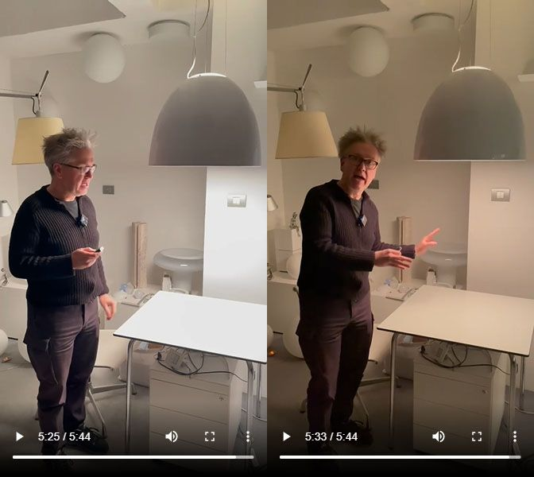
Zdroj: Stmívání halogenové žárovky a změna teploty chromatičnosti
Náš světelný plán
Jak tedy budeme svítit v našem domě? Naším požadavkem bylo navrhnout osvětlení tak, aby bylo v souladu s výše popsanými principy zdravého svícení. Chceme kvalitní a funkční osvětlení s rozumným poměrem cena/výkon. Nepotřebujeme drahé designovky za desítky tisíc. Líbí se nám italská světla Artemide, ale nemusí být nutně všude. Preferujeme svítidla s vyměnitelným zdrojem. Václav nám vybral nejvhodnější svítidla s ohledem na naše požadavky.
Celý obývák bude osvětlovat výkonná světelná LED lišta o délce 5 m, umístěná v horní části knihovny. Lišta bude skrytá a pomocí odrazu o strop vytvoří po celé místnosti příjemné rozptýlené světlo bez stínů. Světlo má teplotu 4000 K a CRI 98. Toto svítidlo vyrábí přímo Hynek a jeho tým. Když jsem o této světelné liště říkal naší interiérové designérce, byla dost překvapená, že nic takového ještě neviděla a měla pochybnosti, zda opravdu dokáže vysvítit místnost o velikosti 40 m2. Metr lišty má světelný výkon 5000 lm. To je asi jako 7 kusů 60 W žárovek. Ta lišta bude mít 5 metrů, takže vytvoří světlo o síle 35 kusů 60 W žárovek, což by mělo bezproblému osvětlit celý prostor. Pro večerní a noční svícení bude v dolní části knihovny umístěn PC Amber LED pásek. V obýváku bude také klasická lampa (např. Artemide Melampo), ve které bude Vitae žárovka. Tato biodynamická LED žárovka je Hynkovým vynálezem a je unikátní v tom, že nabízí 3 režimy svícení: 1) oranžové světlo bez modré složky, které je ideální na večer a noc, 2) teplé bílé světlo na večerní relax, 3) bílé světlo na práci s vysokým podílem modré složky, která podporuje kognitivní funkce mozku a koncentraci.
V kuchyni použijeme závěsné svítidlo MEDD z Hynkovy produkce. Jedná se o výkonné konzolové LED svítidlo z lakovaného hliníku. Svítí nepřímo směrem do stropu a má stejné parametry jako lišta v obýváku. Vytváří měkké rozptýlené světlo. Nad kuchyňskou linkou budou 2 LED pásky - jedno s denním bílým světlem 4000 K a CRI 98, druhé PC Amber pro noční svícení. Nad jídelním stolem bude ve výšce očí zavěšený Artemide Nur Gloss se stmívatelnou halogenovou žárovkou 205 W. Nur díky difuzoru dokonale rozptyluje světlo, eliminuje stíny, odlesky a zabraňuje oslnění. Má neprůsvitné stínítko a skleněný vrchlík osvětluje strop, čímž se zamezuje jeskyňovému efektu.
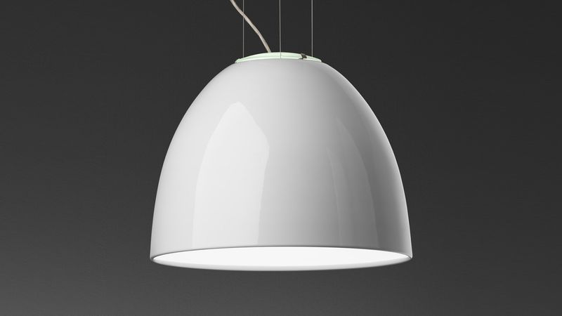
Zdroj: Artemide Nur Gloss
V ložnici budeme mít nástěnné svítidlo Artemide Surf Wall se stmívatelnou halogenovou žárovkou. Na nočních stolcích budou lampičky s Vitae žárovkou a pod stolky budou PC Amber LED pásky pro noční svícení.
V dětských pokojích a pracovně také použijeme svítilo Artemide Surf Wall, které bude na zdi. Stropy ve všech pokojích tedy zůstanou čisté. Na pracovních stolech budou stolní lampy Artemide Tolomeo Mini s Vitae žárovkou.
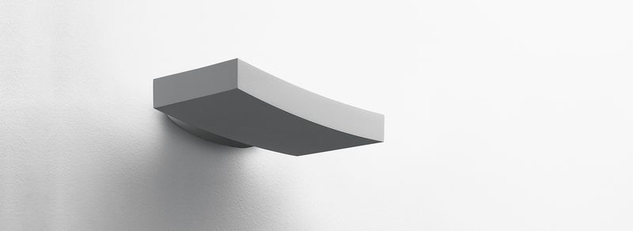
Zdroj: Artemide Surf Wall
V koupelnách použijeme stropní svítidla české výroby Osmont Elsa, která mají velmi dobrý rozptyl světla. Nad zrcadly bude nástěnné LED svítidlo EVA z Hynkovy produkce. Světlo má teplotu 4000 K, CRI 98, má mléčný difuzor a svítí oběma směry - ke stropu i k zrcadlu. K zrcadlu by byly ideální 2 EVY po stranách, ale kvůli omezenému rozpočtu jsme zvolili jen jednu EVU. Pod všemi umyvadly bude opět PC Amber LED pásek pro noční svícení.
V šatnách, technické místnosti, spíži a přístřešku parkovacího stání bude také Osmont Elsa. Toto svítidlo se vyrábí v různých velikostech.
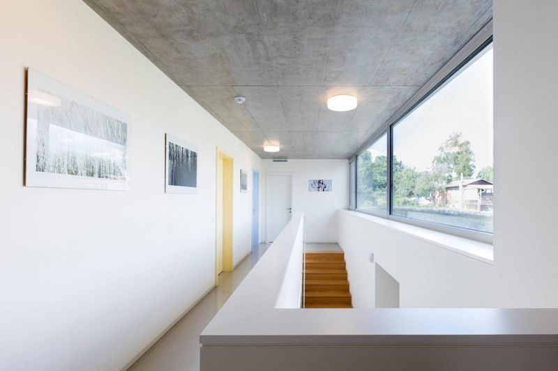
Zdroj: Osmont Elsa
V chodbách, zádveří a na schodišti budeme svítit nástěnnými svítidly Artemide Melete se zabudovaným LED zdrojem. Světlo má teplotu 2700 K a CRI 90. Pro noční osvětlení u země použijeme SLV Frame Curve, jehož zdroj modifikuje Hynkův tým na PC Amber LED zdroj. Při noční návštěvě toalety tak nebudeme vystaveni modrému světlu.
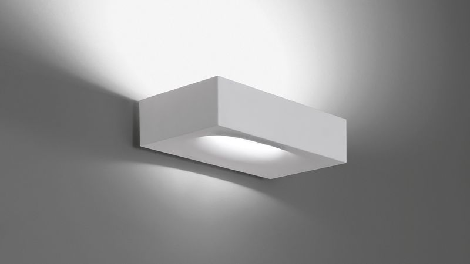
Zdroj: Artemide Melete
Na terase a u vchodu budeme mít nástěnné LED svítidlo Slat One. Světlo má teplotu 3000 K, krytí IP65 a lze jej natáčet dolů i nahoru. Dále můžeme na terase použít praktickou přenosnou kuželku Flos Mayday s Vitae žárovkou. Žádná další světla na terase, lodžiích, fasádě ani v zahradě nebudou. Někdo používá externí noční osvětlení u příjezdové cesty, v zahradě, pro nasvícení čísla popisného apod. My nechceme přispívat ke světelnému znečištění. Umělé osvětlení navíc škodí i přírodě. Pokud by bylo potřeba si někde posvítit, můžeme použít přenosnou lampu a přinejhorším si posvítíme z interiéru přes francouzská okna.
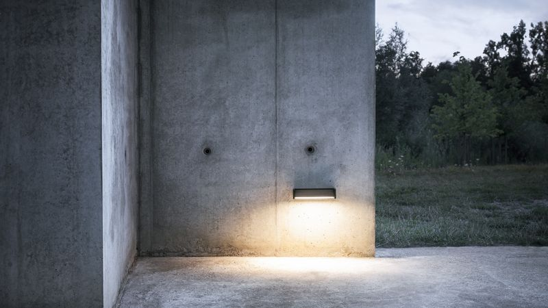
Zdroj: Slat One
Ve všech pokojích tedy budeme svítit nepřímo do stropu a odrazem získáme měkké světlo bez ostrých stínů. Žádné z hlavních svítidel nebude na stropě. V menších místnostech budou stropní svítidla se stínidlem, které vytváří difuzní rozptýlené světlo. V celém domě nebude ani jedna bodovka. Mimo denního osvětlení budeme mít světla pro večerní relaxaci a noční svícení, které nebude nijak narušovat cirkadiánní rytmus ani kvalitu spánku. O správné přepínání denního / večerního / nočního režimu se automaticky postará Loxone. Některá světla se budou zapínat pomocí pohybového čidla (toaleta) nebo magnetického kontaktu (spíž).
Určitě můžeme všem doporučit nechat si zpracovat světelný plán od Hynka Medřického nebo aspoň navštívit jeho showroom. My to považujeme za jednu z nejlepších investic. Vše, co jsem zde popisoval, jsme měli možnost vyzkoušet na vlastní oči. V různých způsobech svícení jsou velké rozdíly. Správně navržené osvětlení dokáže pozvednout celý interier o level výš a navíc má velký dopad na psychiku, výkon a zdraví člověka. Naše řešení osvětlení domu je efektivní, vysoce funkční a cenově dostupné.
L.
Moc dekuji, vaše odpověď by mi velmi pomohla.
Děkuji